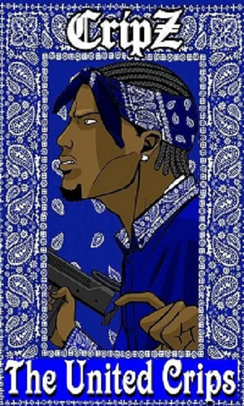

Crips

Crips (с англ. «Калеки», хромые) — многочисленная уличная банда, преступное сообщество в США, состоящее преимущественно из афроамериканцев. По состоянию на 2007 год численность членов Crips оценивается примерно в 40 тысяч человек, на данный момент численность Crips возросла примерно до 60 тысяч. Известна противостоянием с другими преступными группировками, входящими в альянс Bloods, численность которого меньше чем численность Crips. Состоит из множества группировок, большинство из которых находится в Лос-Анджелесе. Crips не являются «цельной» криминальной организацией и представляют собой множество отдельных враждующих между собой банд объединённых лишь общей символикой банды Crips для борьбы с конкурентными бандами Mara Salvatrucha, Bloods и т. п. могут создавать альянсы: так называемые «Сеты» (англ. «Set»). Отличительный знак участников банды — ношение бандан (и одежды в общем) синего, голубого и серого цветов, иногда — ношение тросточек. Для того чтобы вступить в банду, парню нужно совершить преступление при свидетелях, а девушке вступить в половое сношение со старшими членами банды. В среде банды также возник знаменитый танец c-walk (англ.). Развит собственный жаргон и алфавит. Основана в Лос-Анджелесе в 1969 году 15-летним подростком Рэймондом Вашингтоном и его другом Стэнли «Туки» Уильямсом. Первоначально Рэймонд Вашингтон назвал свою банду Baby Avenues, находясь под впечатлением от движения «Чёрные пантеры». Позднее они стали называть себя Avenues Cribs (англ. crib — лачуга) или Cribs. Хотя изначально Crips были монолитным образованием с конкретной топонимической привязкой (несколько улиц в южном Лос-Анджелесе), с увеличением количества новых Crips-группировок в смежных районах южного Лос-Анджелеса, в 70-х годах произошёл раскол, породивший множество враждующих между собой Crips-банд. В 1971 году члены банды напали на пожилых японок, которые затем описали преступников как хромых (англ. cripple), так как все участники нападения были с тросточками. Об этом происшествии написали местные газеты, и за бандой закрепилось новое название — Crips. В 1979 году Вашингтон был застрелен в возрасте 26 лет. В том же году другой создатель банды Стэнли «Туки» Уильямс был арестован за убийство четырёх человек (продавца, супружеской пары и их дочери). Он был приговорён к смертной казни. Находясь в заключении около 25 лет, Уильямс занимался литературной деятельностью, в своих произведениях он убеждал подростков из гетто не участвовать в преступных группах. Уильямс девять раз выдвигался на Нобелевскую премию (пять за мир и четыре за его литературные произведения), был награждён премией президента США, в Голливуде был снят фильм о его жизни. Несмотря на немногочисленные протесты общественности, губернатор Калифорнии Арнольд Шварценеггер отказался удовлетворить прошение о его помиловании, и 13 декабря 2005 года Уильямс был казнён посредством введения смертельной инъекции. В настоящее время банда Crips считается одной из крупнейших в США. Её членам инкриминируются убийства, грабежи, торговля наркотиками и другие преступления. Больше всего Crips в Калифорнии, откуда она начала развиваться. Позже свои «синие» появились и на противоположном берегу США. В настоящее время даже вне США появляются группировки, копирующие культуру «Калек». Альянс очень разрознен, несмотря на свою большую численность, большинство входящих в него банд воюют между собой и даже заключают союзы с бандами из альянса Bloods против других банд входящих в альянс Crips. Хотя цветами Crips являются серый, синий и голубой, многие банды из альянса вместо этих цветов носят другие: жёлтый, зелёный, оранжевый, пурпурный, коричневый и другие, в основном чтобы различать своих от участников враждебных банд из альянса Crips.